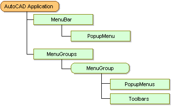
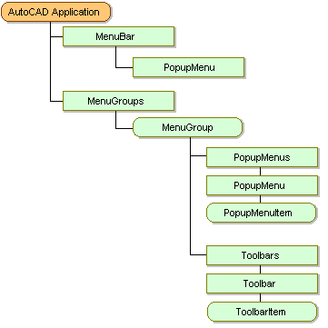

AutoCAD ActiveX provides several menu-related objects. The two most important are the MenuBar collection and the MenuGroups collection.
The MenuBar collection contains all the menus that are displayed in the AutoCAD menu bar.

The MenuGroups collection contains the menu groups that are loaded in the current AutoCAD session. These menu groups contain all the menus that are available to the AutoCAD session, some or all of which may be displayed on the AutoCAD menu bar. In addition to the menus, the menu groups also contain all the toolbars that are available to the current AutoCAD session.
Each menu group contains a PopupMenus collection and a Toolbars collection. The PopupMenus collection contains all the menus within the menu group. Likewise, the Toolbars collection contains all the toolbars within the menu group.
Each PopupMenu is actually a collection that contains an individual object for each menu item that appears on that menu. Likewise, each Toolbar is also a collection that contains an individual object for each toolbar item that appears on that toolbar.
